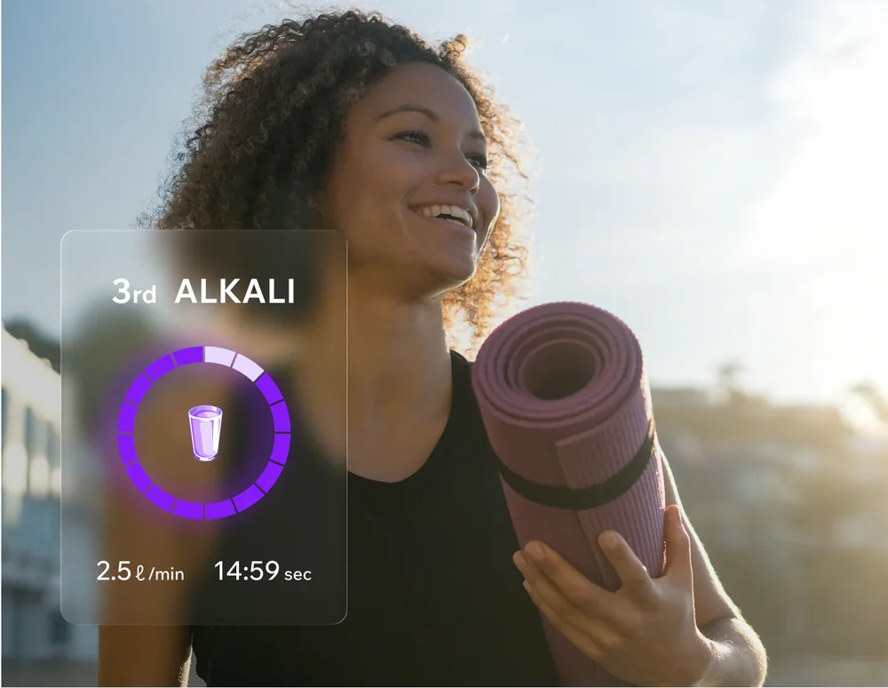
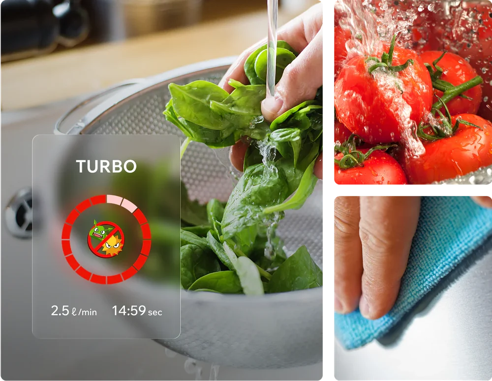
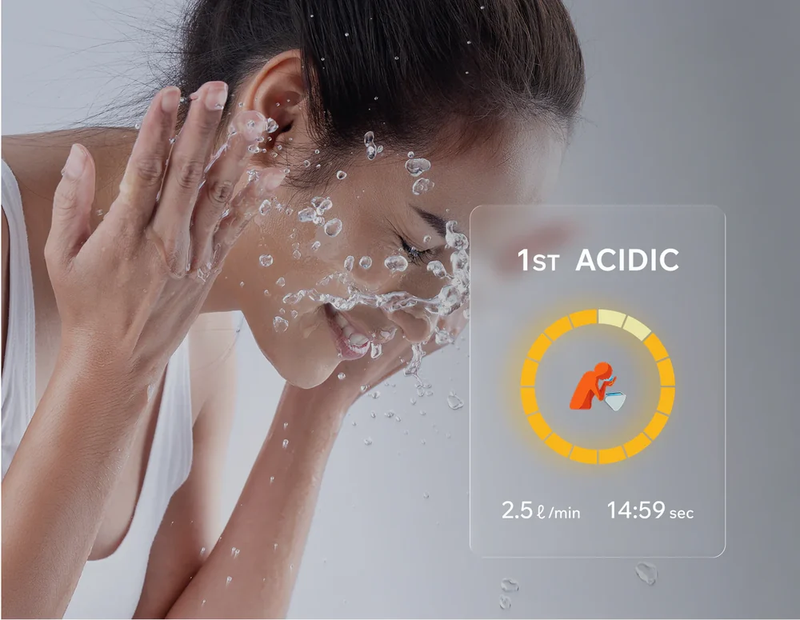
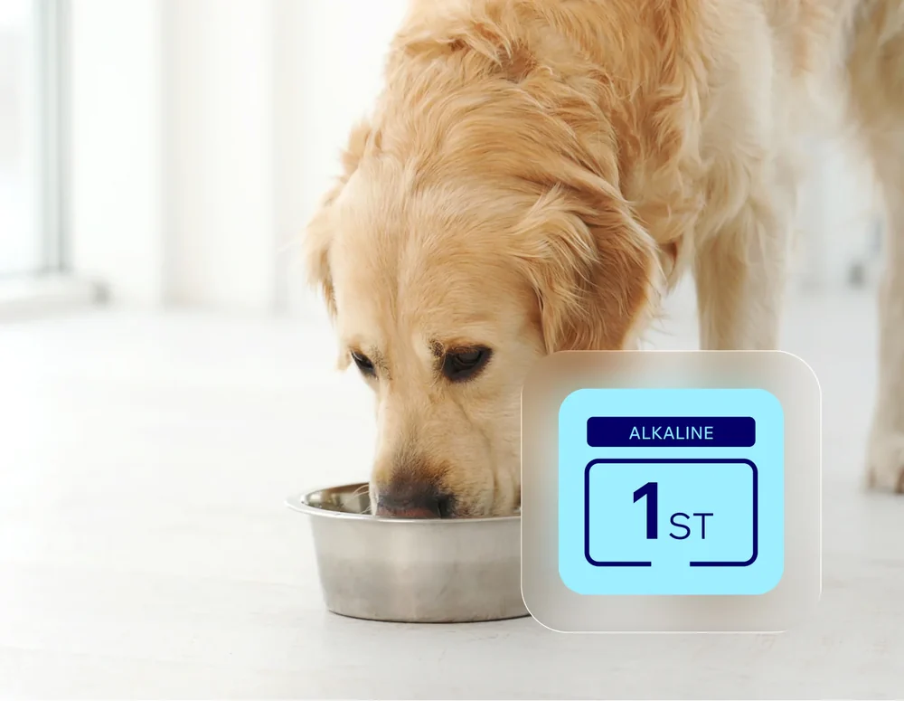
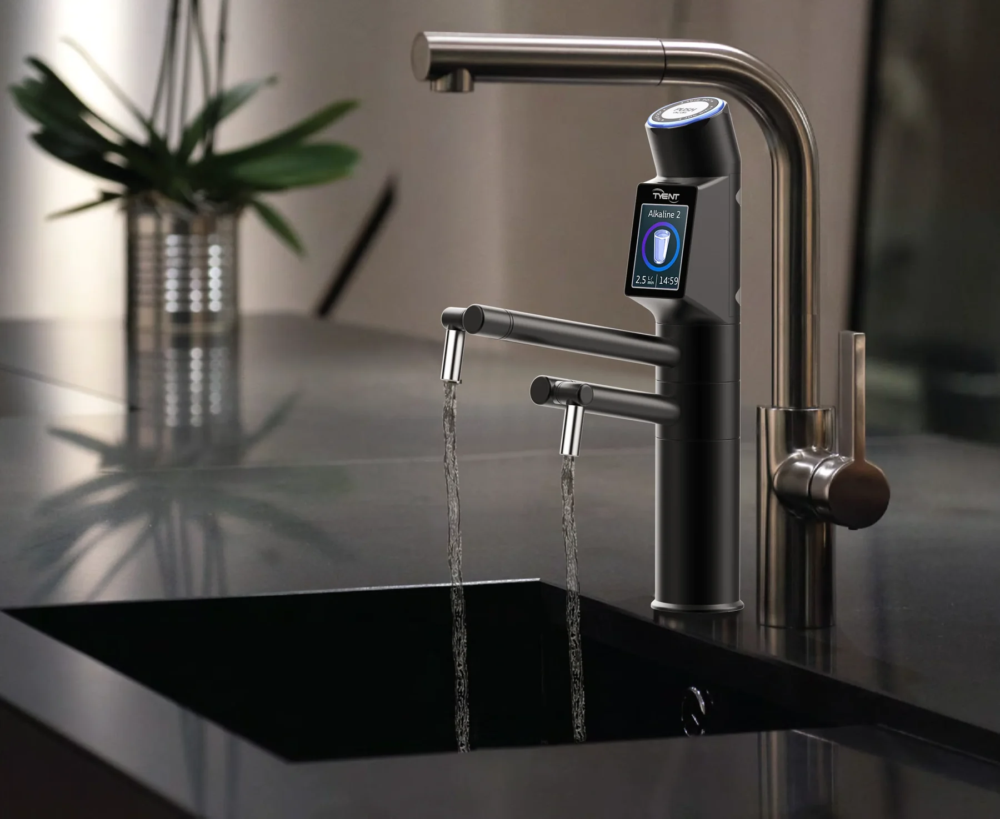
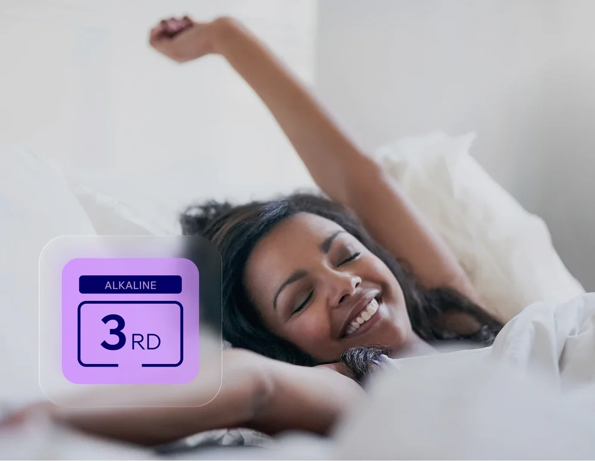

Drinking and cooking
Smooth-tasting water for the family, tea, coffee, dal and rice.
A purifier gives you one kind of water. A water ionizer gives you a choice: alkaline to drink, neutral for medicine, and acidic for cleaning and skin care. Here is how it works.
What it is
A water ionizer connects to your tap. First it filters the water, much like a good purifier. Then it passes that clean water across charged plates in a process called electrolysis.
Electrolysis separates the water into two streams. One is alkaline, with a higher pH and dissolved hydrogen. The other is acidic. You choose the level on the screen, and each stream leaves through its own outlet.

How it works
Everything happens as the water flows. There is no tank and nothing to wait for.
Carbon and ultra-filtration stages remove chlorine, rust, sediment and unpleasant taste while leaving natural minerals in.
The water flows between platinum-coated titanium plates. A controlled charge separates it into alkaline and acidic streams.
Alkaline or purified water comes from the main spout. Acidic water leaves through a separate hose for cleaning.
The pH scale
pH measures how acidic or alkaline a liquid is, on a scale from 0 to 14. Each step is ten times stronger than the one before, so pH 9 is ten times more alkaline than pH 8.
Tap any number to see where everyday liquids and your Tyent settings sit.
Smooth daily drinking water for the whole family.
Similar to: a pinch of baking soda in waterAcidic settings. For cleaning surfaces, washing your face and rinsing hair.
Purified setting. Filtered, neutral water for medicines and baby formula.
Alkaline settings. Drinking and cooking at 8.5 to 9.5; turbo 11.5 for washing produce only.
Settings are approximate and depend on your source water and model. Your installer will calibrate them for your supply.
Everyday uses
Most families start with drinking water and soon find themselves using the other settings every day.

Smooth-tasting water for the family, tea, coffee, dal and rice.

Filtered, neutral water whenever you need water without ionization.

Strong alkaline water for soaking produce. Not for drinking.

Mildly acidic water for washing your face and rinsing hair.

The gentlest alkaline level for pets, and mild water for your plants.

For wiping down chopping boards, sinks and counters.

Straight talk
We would rather you buy a Tyent for the right reasons. A water ionizer is a better way to filter and enjoy water at home. It is not a medicine.
Questions
Still curious? Our team is happy to answer anything during your free home demo.
Ask our team →Book a free home demonstration. A Tyent specialist will test your water and show you every setting.